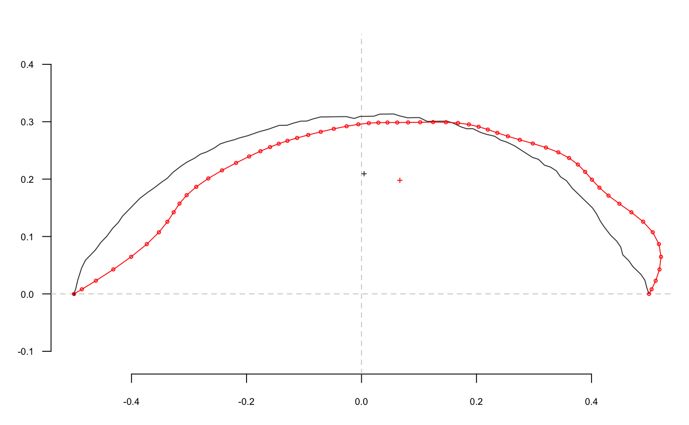
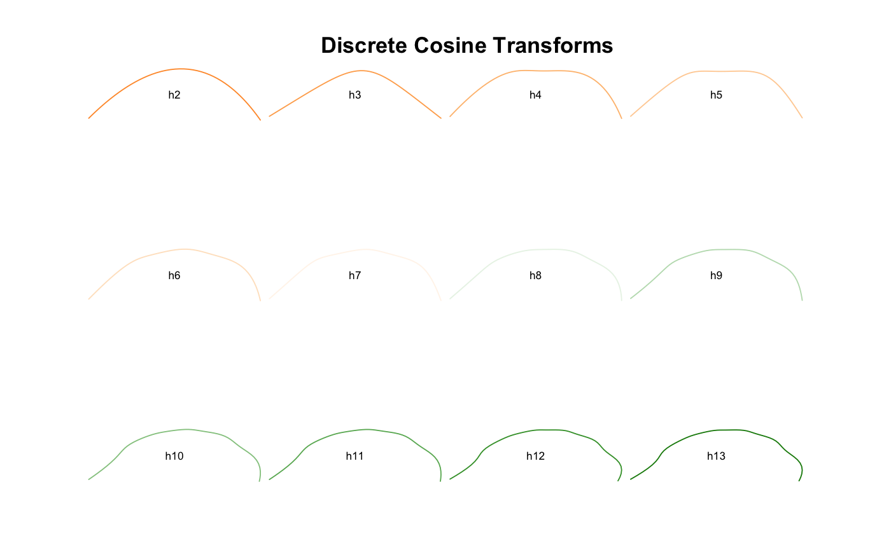

Calculates discrete cosine transforms, as introduced by Dommergues and colleagues, on a shape (mainly open outlines).
dfourier(coo, nb.h) # S3 method for default dfourier(coo, nb.h) # S3 method for Opn dfourier(coo, nb.h) # S3 method for Coo dfourier(coo, nb.h)
| coo | a matrix (or a list) of (x; y) coordinates |
|---|---|
| nb.h | numeric the number of harmonics to calculate |
a list with the following components:
an the A harmonic coefficients
bn the B harmonic coefficients
mod the modules of the points
arg the arguments of the points
This method has been only poorly tested in Momocs and should be considered as experimental. Yet improved by a factor 10, this method is still long to execute. It will be improved in further releases but it should not be so painful right now. It also explains the progress bar. Shapes should be aligned before performing the dct transform.
Silent message and progress bars (if any) with options("verbose"=FALSE).
Dommergues, C. H., Dommergues, J.-L., & Verrecchia, E. P. (2007). The Discrete Cosine Transform, a Fourier-related Method for Morphometric Analysis of Open Contours. Mathematical Geology, 39(8), 749-763. doi:10.1007/s11004-007-9124-6
Many thanks to Remi Laffont for the translation in R).
Other dfourier: dfourier_i,
dfourier_shape
# NOT RUN { # because it's long od <- dfourier(olea) od op <- PCA(od) plot(op, 1) # }o.dfourier <- dfourier(o, nb.h=12) o.dfourier#> $an #> [1] -3.11820730 -0.13206715 -0.24781390 -0.09660325 -0.06788311 -0.06691169 #> [7] -0.03519719 -0.06016120 -0.02071002 -0.06544994 -0.01169704 -0.06810722 #> #> $bn #> [1] 0.032926049 -0.914830858 0.005334948 -0.268975696 -0.006644877 #> [6] -0.101625518 0.003834764 -0.049467452 0.003042230 -0.028964333 #> [11] -0.002260202 -0.022833346 #> #> $mod #> [1] 3.11838113 0.92431446 0.24787132 0.28579733 0.06820756 0.12167547 #> [7] 0.03540548 0.07788709 0.02093227 0.07157253 0.01191341 0.07183283 #> #> $phi #> [1] 3.131034 -1.714168 3.120068 -1.915601 -3.044016 -2.153064 3.033070 #> [8] -2.453432 2.995739 -2.724958 -2.950716 -2.818113 #>#future calibrate_reconstructions o <- olea[1] h.range <- 2:13 coo <- list() for (i in seq(along=h.range)){ coo[[i]] <- dfourier_i(dfourier(o, nb.h=h.range[i]))} names(coo) <- paste0('h', h.range) panel(Opn(coo), borders=col_india(12), names=TRUE)title('Discrete Cosine Transforms')